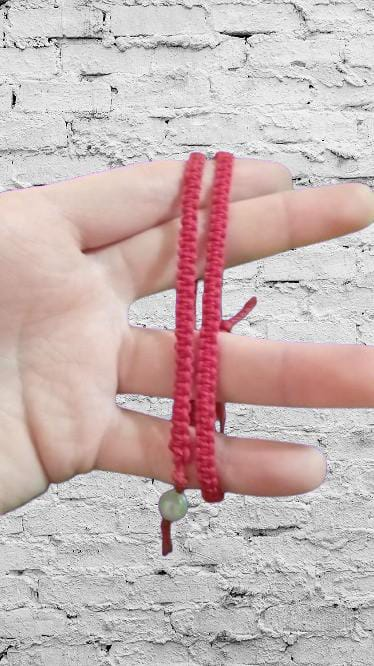
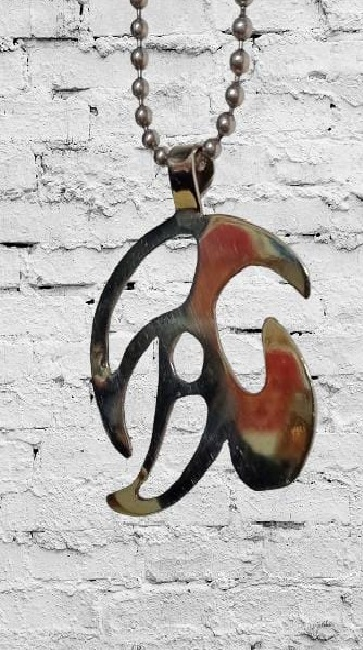

Productos:
.jpeg) Los aros de alpaca que se muestran en la imágen tienen un diseño de lágrima,
Los aros de alpaca que se muestran en la imágen tienen un diseño de lágrima,
con un acabado texturizado. La alpaca tiene un aspecto brillante y martillado,
lo que les da un estilo moderno pero también luciendo vintage. Se conectan al
gancho de cierre por una pequeña argolla, y su cierre es de lo mas seguros que
hay.Son ideales para un look llamativo, combinando la simplicidad con el toque
artesanal debido a su superficie irregular.
aritos:- 1...
- x1500$
- 3...
- x4000$
Esta pulsera de hilo rojo es una pieza artesanal única, cuidadosamente tejida a mano.
Su diseño sencillo lo convierte en un accesorio versátil, ideal para cualquier ocasión.
El hilo rojo es conocido por su simbolismo de protección, buena suerte y energía
positiva en diversas culturas, lo que añade un valor especial a esta pulsera. Además,
cuenta con un nudo ajustable que permite adaptarla cómodamente a cualquier
muñeca. Como toque final, lleva un pequeño colgante de piedra, que aporta un detalle
delicado. Esta pulsera es perfecta tanto para uso personal como para regalar a alguien
especial.
Pulsera:- 1...
- x1000$
- 3...
- x2500$
Lo que se muestra en la imagen es un colgante de diseño abstracto, elaborado en una alpaca
brillante con líneas curvas y fluidas. El diseño parece representar una figura orgánica o
geométrica, con un pequeño círculo en el centro que añade un toque visual interesante.
El colgante está sujeto a una cadena de pequeñas cuentas metálicas, que complementa su
estilo moderno y minimalista. Es una pieza llamativa, perfecta para agregar un toque artístico
a cualquier atuendo.
collar:- 1...
- x3500$
- 3...
- x10000$
{kind=link}
{kind=link}